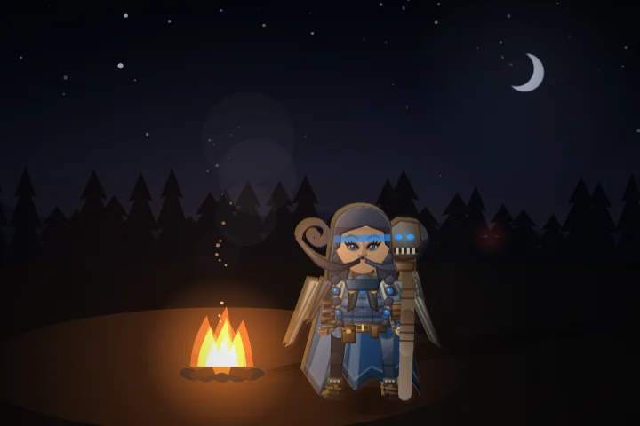
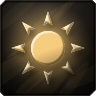
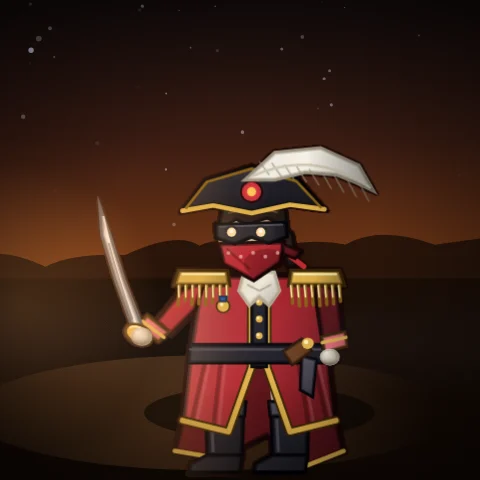
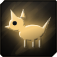
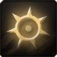

Wanted
for taking the whole meter
Skybreak
Thirty jumps with almost no falloff. One cast cleared the screen.
Brought in
The horde learned to breathe in and out. Your summons grew legs. Eight callings found their passives, the balance court sat in session, and the Masked Admiral came ashore with twice the fight in her. Also, ghouls explode now.
Every battlefield used to stop raising its pace at about 18:00. A lucky night was safe from minute eleven, and an unlucky one had no second chance. Arm Tides beside Hyper and the horde moves with the bosses: it gathers before each one, falters after it falls, and the night deepens behind it.
Tides opens once you have held any night to dawn. The ordinary night is exactly as it was, and the Nightly and the Eclipse Arena play without it.
In the forty seconds before a boss arrives, creatures come faster and faster, up to one and a half times the pace.
For about twenty seconds after a boss falls, creatures come at a third of the pace. A breath to feel what you just became.
After each of the first four bosses, creature health steps up by up to 10%, 15%, 25% and 30%. It only deepens as far as you can take it: if the last ninety seconds have been draining you, the Watch says it deepens a little or holds back. A thorns or lifesteal build that heals every blow back is doing fine, and the night treats it that way.
Once the last wave has arrived, the pace keeps climbing, up to about 80% by dawn.
Horde pace across a night, with bosses at 5:00, 10:30, 16:00, 22:00 and 27:00. Illustrative shape, real rules.
Not one survivor who failed to evolve a weapon saw dawn in our test nights. So with Tides armed, a boss also leaves a violet reliquary where it fell: one gift, three gifts one time in five, or five gifts one time in twenty. After a full deepening, three gifts are twice as likely and five three times. Each gift is a step down the road your build is already on:
Your summons used to be their card icons, lit and bobbing about the field. Now spirit wolves gallop on real legs of pale fire, and ghouls are hunched grave-corpses with rot glowing through the hide. They also stopped being one creature with different numbers.
When a boss, an elite or anything that shoots is in reach, the whole pack goes for it, and each bite lands harder for every packmate already on it. A pounce snaps real jaws shut and mauls what is around it. Whatever they hunt wears a turning ring.
Ghouls stay close and turn on whatever is nearest you. Their claws slow what they rake and leave it rotting, so it takes more from everything, your weapons included. Their rake sweeps a visible arc exactly as wide as what it hits.
A tester's build killed everything before it reached a ghoul's short leash, so the ghouls never touched anything. Now a ghoul with nothing to rake runs out to the thickest of the crowd and bursts. They go one at a time: when one breaks loose, the others start their wait again.
A ghoul with work at your side never leaves it. A breakout is worth about half of what a working guard does.

A stone used to rise every three seconds, ember, spring, gale, over and over, whatever you did. Now each stone is built by a way of fighting, and it rises where you stand when it is full. A brawler raises embers, a healer springs, a kiter gales.
Pick a style and watch which stones it builds.
Each has its own bar on the HUD, and stones of different kinds stack. Measured at Professional against the old stones, the calling is worth the same. It is just yours to steer now.

DZ, the Ruinseeker, the Druid and the Monk each had an epic passive that deepened their calling. Now the other eight do too, offered once you hold the calling. Four of them also work without it, and are offered to any build that can use them. The card shows whichever half you would get.
Tap a card to turn it over.
A tester's Skybreak did 59% of a night's damage. Every test we had measured a weapon alone, and alone every weapon sat in one band. In a build it is different: whatever reaches out first kills the crowd before it arrives, and the weapons at your side starve. So we measured it the way the meter sees it: random builds of five, in the real horde, every passive at its cap, 120 builds at a time.
Four were brought in.
Thirty jumps with almost no falloff. One cast cleared the screen.
Two seeking, piercing, splashing bolts. Each Duplicity rank added half again.
At full Expanse its ring covered the ground the horde stood on.
With Truestrike every knife sought the boss and all fifteen landed at the full bonus.
It ate Skybreak and Gyrestorm and was flat worse than both. A union may be a little under its pair, since it frees a slot, but not that far under. It gets its reach back through its own lightning.
A new sweep flagged all three. Both readings came from a field of creatures that never die. In the real waves each takes between 18% and 23% of a five-weapon build. Case dismissed.
Each weapon's share of what the five weapons in its build did, over sixty random builds. A fair share is 20%.
From the first weapon sweep in this update. A later pass, below, set weapons with a second job a little under these.
A weapon that heals you, or slows what it hits, and deals as much as one that only deals damage, is simply better. Now the weapons with a second job sit below the pure-damage ones, and the balance tests check it: healers at about four fifths of the damage, weapons that slow at a little over nine tenths.
Skybreak came down again with Moonbrand; Knifestorm and Axe Gyre, the two lowest, came up. Every pure-damage weapon now takes 19% to 23% of a five-weapon build, and Skybreak tops the meter in 3 of the 28 builds it was in, down from 12.

Sink the Dust Galleon and the Masked Admiral fights you on foot. That duel is the climax of the Dustreach finale, and it was the softer half: one small target every weapon reaches, over in about a minute. She now has twice the health. The ship is unchanged.
"She fights better than she sails."The bestiary, on the Admiral ashore

The field darkens toward midnight and warms toward dawn, in each battlefield's own colour. You stand in the watch fire's glow, every spell lights and tints the ground it crosses, danger glows red, the brightest magic blooms, and mist, fireflies, dust, snow, wisps or drizzle move through the air.
As the night gets dangerous, a second band comes in under each battlefield's music: a kick, a backbeat on that battlefield's own drum, a shaker and a walking bass. The melody gets an echo, the music darkens toward midnight, and in the last stretch before dawn a high bell comes in over it.
When a fight gets too heavy for your machine it drops the bloom first, then the mist, then the night lighting, and only then the resolution, keeping each step only if frames got faster. A machine with no graphics card went from about 55 ms a frame to about 33 in the heaviest fight.
Every weapon used to land with the same blow. Now the blow carries its school. These are the game's own sounds, rendered from its audio engine: a cast, two hits and a crit for each school.
Also: the mix. Measured off real nights, the music sat 12 to 16 dB under the effects in every fight. It comes up, the hit chatter comes down, and the whole game is louder. You may want to turn your volume down a notch.

The defeat screen now says what got through, when, and how hard it hit.
Once broken, either one re-forms on its own over about 4 seconds, at half its full size. No blow can stop that, and every heal hurries it.
The card now says it: every rank returns another 10 plus 60% of the blow.
Level-up cards show a rank as ticks: solid for what you have, dim for what the card gives. Hover and the new tick flickers on.
Cards for anything that heals you carry a small green plus on their mark.
Health is kept in whole points and every heal was rounded down, so a heal that trickles in each frame rounded to nothing, every frame. The fraction now carries over.
Beans follows the bosses. She sets up just after a boss falls, while its gold is on the ground, and her timer names the boss she waits on. Buying eggs puts a word over her head with what they gave.
A beating is easier on the ears. Blows in quick succession come in a little quieter, about a third lower under a steady beating. A heavy blow is always heard in full.
Hallowed Ground and Blighted Earth, layered. Standing on several layers heals you once, at the best layer. With every passive, Hallowed Ground went from 153 a second to 80.
The run graph is back. Show graph on the results banner swaps the figures for the run's timeline.
The Nightly is random again. Abbot Eisen no longer comes up night after night.
Blessings sit above the build, passives run four across and discoveries three. The meters are bars in each source's own colour, and the share on each row is lit to match.
Plus Velocity, Expanse on Gale Chakram, five discoveries, DZ, shrines, card columns, the banish hint and more. Every one is in the full notes below.
Every change in this update, with its numbers. Open one to read it in full.